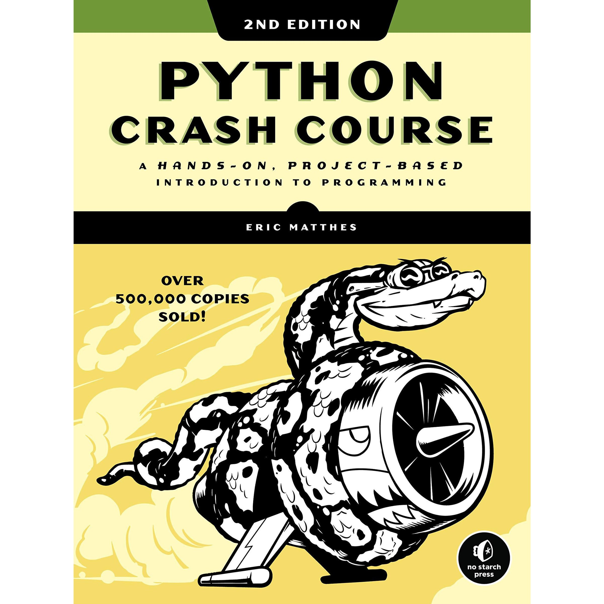
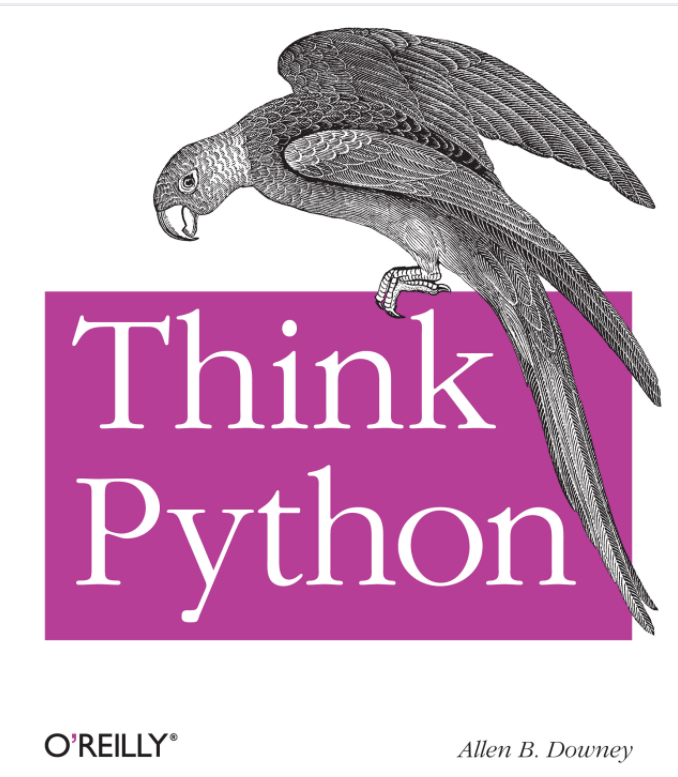
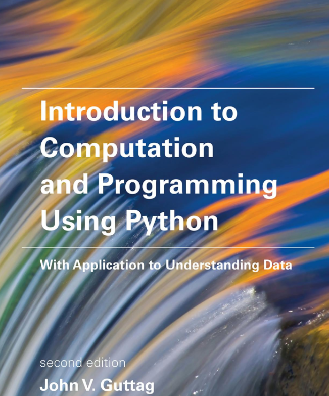

Software Development: Programming and Algorithms
Delivered by: Dr Joseph Aylett-Bullock
Week 3
What does the slice select?
How many letters are printed out from the for loop?
The first line prints YH. The loop prints P, then Y: two iterations.
This week:



Value: what the object represents
Type: what can be done with the object (operations)
Identity: is the memory address assigned to it. id() stays constant during its lifetime.
Predict which label moves when x receives a new value.
A True, True, True B True, False, True C False, False, True
B. == compares values. is compares identity. a and b refer to one integer; c is a separate float with the same numeric value as a.
We have so far met: int, float, bool and str.
Numeric/Boolean types are scalar which have no accessible internal structure
str can be thought of as a structured, or non-scalar, type
tuples, list and dictionaries are structured / compound data types in Python.
Like string, tuples are ordered sequence of elements
Difference is that elements in tuples do not have to be characters
Each element can be of any type
Represented with parentheses
Normally used to return more than one value from a function
A = (0, 0)
B = (4, 0)
C = (4, 3)
D = (0, 3)
print(B[0], B[1])
print(type(B), len(B))
print(type((4,)), type((4)))A tuple is an ordered sequence. Its elements can have different types: ("A", 2, 1.5).
The comma creates a one-element tuple: (4,).
Build a slice that selects B and D. Predict before pressing Slice.
Open the sequence board. Try 1:5:2, -3: and ::-1.
A tuple is immutable.
The name A can refer to a different tuple.
Unpacking assigns each element to a name. The number of names must match here.
Tuples can be concatenated.
A, B, C, D = (0, 0), (4, 0), (4, 3), (0, 3)
route = [A, C, B, D]
print(route[1])
print(route[-1])
print(route[1:3])
route[1], route[2] = route[2], route[1]
print(route)Lists are ordered and mutable, and can mix element types. Here each element is a coordinate tuple.
The final assignment swaps the references stored at positions 1 and 2. The coordinate tuples stay unchanged.
Visit every station once and return to A only at the end. Can you improve on A, C, B, D, A?
Lists are Python objects, everything in Python is an object
objects have data
objects can expose attributes and methods
Use object_name.attribute to read an attribute, or object_name.method() to call a method
Will learn more about these later
Compare append, extend and + from the same starting list. What does the dot mean?
Open the list board. A method such as route.append(...) acts on the object before the dot.
An index selects a position. A value selects the first matching element.
Open the list board. Predict which element disappears and what the operation returns.
Sorting the individual leg lengths leaves the total unchanged. To optimise, we will sort complete tours by their total distance.
The expression builds each element. The for chooses inputs. An optional if filters them.
We want to try a new trial route while keeping the original. Does trial = route achieve that?
Open the object board. Use two name labels and one physical route sheet.
route = ["A", "C", "B", "D"]
trial = route.copy()
trial[1], trial[2] = trial[2], trial[1]
print(route)
print(trial)
print(route is trial)route.copy() and route[:] create a new outer list.
The original route stays ['A', 'C', 'B', 'D']. The trial becomes ['A', 'B', 'C', 'D'].
Copying the outer list leaves its elements referring to the same inner objects.
Open the object board. Predict groups after trial[0].append("D").
Later: copy.deepcopy() also copies nested mutable objects. We will meet library imports in a later session.
Remove A and B. Predict what happens as the list shifts beneath the loop’s next index.
Open the iteration board. Compare iterating over the original with iterating over a copy.
What about if we used .append() inside the for loop?
A True, True B True, False C False, True D False, False
B. Equal contents, separate list objects. Replacing an element of b leaves a unchanged.
Fix A as the start. Extend each partial route with every unvisited stop.
A, B, C, D = (0, 0), (4, 0), (4, 3), (0, 3)
stops = [B, C, D]
routes = [[A]]
for step in range(len(stops)):
longer_routes = []
for route in routes:
for stop in stops:
if stop not in route:
longer_routes.append(route + [stop])
routes = longer_routes
print(len(routes))There are 6 permutations of B, C and D. Order matters. + creates a new route each time.
Each leg uses Pythagoras: ((x2 - x1)**2 + (y2 - y1)**2)**0.5.
A, B, C, D = (0, 0), (4, 0), (4, 3), (0, 3)
route = [A, C, B, D]
closed = route + [route[0]]
total = 0
for i in range(len(closed) - 1):
x1, y1 = closed[i]
x2, y2 = closed[i + 1]
total += ((x2 - x1)**2 + (y2 - y1)**2)**0.5
print(total)The crossed tour is 16 model units. Changing the order to [A, B, C, D] gives 14.
Continue in the same IDE script, using the six routes from step 1.
scores = []
for route in routes:
closed = route + [route[0]]
total = 0
for i in range(len(closed) - 1):
x1, y1 = closed[i]
x2, y2 = closed[i + 1]
total += ((x2 - x1)**2 + (y2 - y1)**2)**0.5
scores.append((total, route))
ranked = sorted(scores)
best_distance, best_route = ranked[0]
print(best_distance)
print(best_route + [best_route[0]])Sort (distance, route) pairs by distance first. The best distance is 14; both perimeter directions tie.
Find the shortest complete tour that visits every stop once and returns to its start.
| Total stops, including A | Visiting orders with A fixed |
|---|---|
| 4 | 3! = 6 |
| 8 | 7! = 5,040 |
| 12 | 11! = 39,916,800 |
| 16 | 15! = 1,307,674,368,000 |
Our exhaustive search checks (n − 1)! orders. Reversed tours count separately.
The optimisation problem is NP-hard. A polynomial-time algorithm for every input is not known. The factorial count describes our method, rather than proving NP-hardness.
Two lists must stay aligned:
The route can now store stop names and use a dictionary to look up their coordinates.
literal = {"A": (0, 0), "B": (4, 0)}
keywords = dict(A=(0, 0), B=(4, 0))
pairs = dict([("A", (0, 0)), ("B", (4, 0))])
print(literal == keywords == pairs)key: value pairs inside braces.A become string keys. They must be valid keyword argument names.{} and dict() both create an empty dictionary. All three examples above contain the same entries.
stock = {"A": 2, "B": 1}
print(stock["A"])
stock["B"] = 3
stock["C"] = 1
print(stock)
print(stock.get("D", 0))
print("D" in stock)Assignment updates an existing key or adds a new one. .get("D", 0) supplies a default without inserting D.
Directly reading stock["D"] would raise KeyError.
A True, True, True
B True, False, True
C False, False, True
B. Membership tests keys. Keys are unique and hashable. Values may repeat or be mutable.
Exercise: - Can you construct the same search over all possible routes, with a dictionary linking each unique stop name to its coordinates?
deliveries = {
"A": {"position": (0, 0), "ducks": 2},
"B": {"position": (4, 0), "ducks": 1}
}
print(deliveries["B"]["position"])
deliveries["B"]["ducks"] += 1
print(deliveries["B"])Each stop has a record. Each record contains values with their own types.
A list could also hold records: [deliveries["A"], deliveries["B"]].
x, y = (4, 3)
first, second = ["A", "B"]
letter1, letter2 = "AB"
stock = {"A": 2, "B": 1}
a, b = stock
q1, q2 = stock.values()
item1, item2 = stock.items()
print(a, b)
print(q1, q2)
print(item1, item2)Iterating over a dictionary gives its keys. Each item is a (key, value) pair. Strings unpack into characters.
In your Python IDE:
** is the unpacking operator
Prediction: what is combined["B"]? Answer: 3. The later mapping wins; stock stays unchanged.
Unordered, finite collection of distinct, hashable elements
Why sets?
route = ["A", "B", "A", "C"]
visited = set(route)
print(len(route), len(visited))
print("B" in visited)
print(type(set()), type({}))The route contains four visits. The set contains three distinct stop names.
Sets are unordered and contain hashable elements. Use set() for an empty set; {} creates a dictionary.
A 4, False B 3, False C 2, False D 2, True
C. Adding an element already present does not add another copy. C has not been visited.
Which locations still need a delivery? Select your prediction, then reveal the result.
Open the set board. Compare difference, intersection, union and symmetric difference.
deliveries = {
"A": {"position": (0, 0), "ducks": 2},
"B": {"position": (4, 0), "ducks": 1}
}
for name, record in deliveries.items():
print(name, record["ducks"])Each iteration unpacks one (key, value) pair (as a tuple).
Here the value is a dictionary, so record["ducks"] reads its quantity.
zip() pairs corresponding elements from iterables, such as two sequences
The name of the function refers to a zipper, which interleaves two rows of teeth
The result is an iterator of tuples, one element from each input
The most common use of zip is in a for loop
stops = ["A", "B", "C"]
quantities = [2, 1]
for stop, quantity in zip(stops, quantities):
print(stop, quantity)Prediction: is there an output line for C?
No. Ordinary zip() ends when the shortest input ends. It yields pairs through an iterator.
enumerate() yields an index and an element together.
A ['A', 'B', 'C'] B ['A', 'B'] C None D Error
B. Both names refer to the same list. To keep the original contents, use backup = route.copy() before the removal.
What are the two printed results? Explain each line before running it.
['A', 'B', 'C'], then None. append changes the list and returns None.
required = {"A", "B", "C", "D"}
visited = {"A", "C", "E"}
missing = required - visited
print(missing)A A and C B B and D C B, D and E D All five
B. B and D are required but have not been visited. Either printed order is valid.
| What do we need to represent? | A useful choice |
|---|---|
| One coordinate pair | Tuple: (4, 3) |
| An editable visiting order | List: ["A", "C", "B", "D"] |
| A record looked up by name | Dictionary: {"A": (0, 0)} |
| Distinct locations visited | Set: {"A", "B", "C"} |
How would you keep a route unchanged while trying a new order?
| Operation | Example | Meaning |
|---|---|---|
| Empty sequences | () and [] |
Empty tuple and list |
| One-element tuple | ("A",) |
The comma matters |
| Index | route[-1] |
Last element; invalid index raises IndexError |
| Slice | route[1:4:2] |
Indices 1 and 3; stop excluded |
| Concatenate | [1, 2] + [3] |
A new list [1, 2, 3] |
| Repeat | ["A"] * 3 |
["A", "A", "A"] |
| Append / extend | a.append(b) / a.extend(b) |
One element / each element of b |
| Remove | a.pop(i) / a.remove(x) |
By index with return / first equal value |
Methods such as append, extend, sort and reverse mutate a list and return None.
Shallow copies share contained objects. A tuple can contain a mutable list, and that list can still change.
keys(), values() and items() return views.d[key] raises KeyError if absent. d.get(key, default) supplies a default without adding the key.
A list of dictionaries:
A dictionary can map many names to similar records, or hold different fields of one record.
| Expression | Meaning |
|---|---|
a - b |
In a and not in b |
a & b |
In both a and b |
a \| b |
In either set or both |
a ^ b |
In exactly one set |
for key, value in d.items(): |
Unpack each dictionary entry |
for a, b in zip(xs, ys): |
Pair elements; ordinary zip stops at the shorter input |
for i, value in enumerate(xs): |
Pair each element with its index |
Sets have no indexing or guaranteed iteration order. zip and enumerate yield iterators.
A, B, C, D = (0, 0), (4, 0), (4, 3), (0, 3)
route = [A, C, B, D]
closed = route + [route[0]]
total = 0
for i in range(len(closed) - 1):
x1, y1 = closed[i]
x2, y2 = closed[i + 1]
total += ((x2 - x1)**2 + (y2 - y1)**2)**0.5
print(total)The final added A closes the tour. Compare with route = [A, B, C, D].
Proof idea for general weighted TSP: an efficient optimiser would also solve the NP-complete Hamiltonian cycle problem.
So finding the shortest TSP tour answers the original cycle question. Building the distance table takes polynomial time.
This is a reduction. It proves hardness; counting our search’s permutations alone does not. NP-hard does not mean every small instance is difficult.
bristol.ac.uk